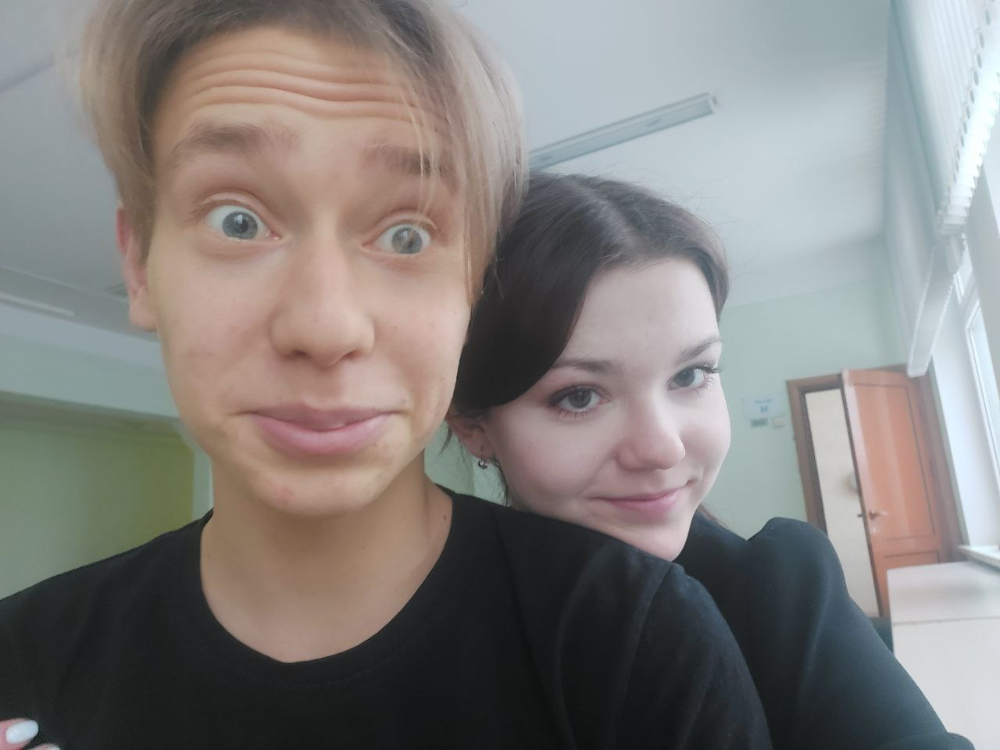

Поздравляю тебя с 10 месяцами вместе!
Мы с тобой прошли уже немаленький путь, по мнению многих, но для нас это только начало. Я мог бы тебя поздравить вживую, написать сообщение, но я все-таки решил подойти оригинально, и я уверен, что такого тебе еще никто не делал. Вот ты только вспомни как все начиналось, как мы сидели на лавочке, просто болтали, я конечно всегда ел, потом и ты подтянулась и перестала стесняться, все время наш разговор начинался сам по себе и не заканчивался, у меня еще ни с кем так не было, я хотел и хочу с тобой разговаривать, с тобой так все естесвенно было и есть, а потом когда ты меня поцеловала, обняла, я понял, что ты любишь меня, ко мне еще ни одна девочка не делала первый шаг. Я вспоминаю лето, как мы с тобой гуляли по ВДНХ, гуляли по дачкам, когда там ночью смотрели беременную в 16, помню каждые твои подарки, и прадники которые я уже встретил с тобой, Вспоминаю наши перемены, потому что они всегда особенные, всегда что-то новое обсуждаем, ты как будто частичка меня, как будто мы с тобой одно целое. И я не могу уже представить свою жизнь без тебя, ты для меня все, мой лучший друг, моя лучшая девушка, мой личный психолог, репетитор, сплетница. А еще в заключении хотел бы сказать что ты у меня самая лучшая во всем мире !!!
Я тебя люблю девочка моя
